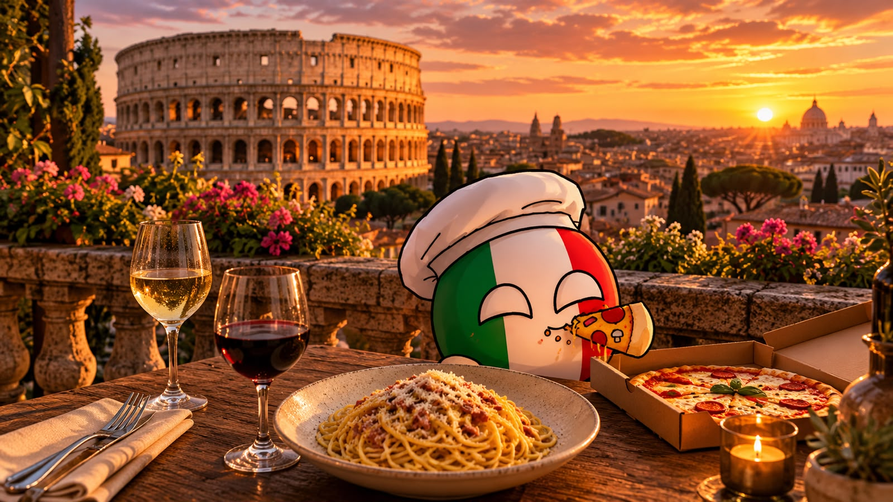

🇧🇷 Brasil
Sabores intensos, ingredientes diversos e uma culinária rica em história e cultura.
Ver receitasConheça os destinos dessa viagem gastronômica.
Sabores intensos, ingredientes diversos e uma culinária rica em história e cultura.
Ver receitas
5 Continentes, 10 Sabores é um projeto que celebra a diversidade cultural através da gastronomia. Aqui você encontra receitas típicas de diferentes países, com um toque de história, curiosidades e muito sabor.
Explorar receitas